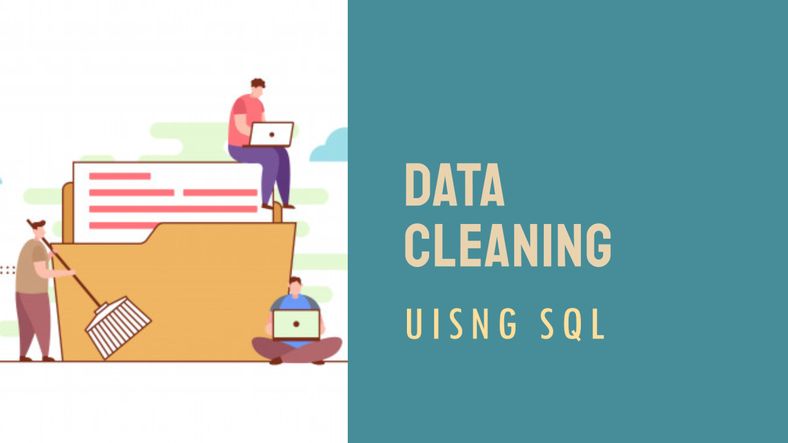
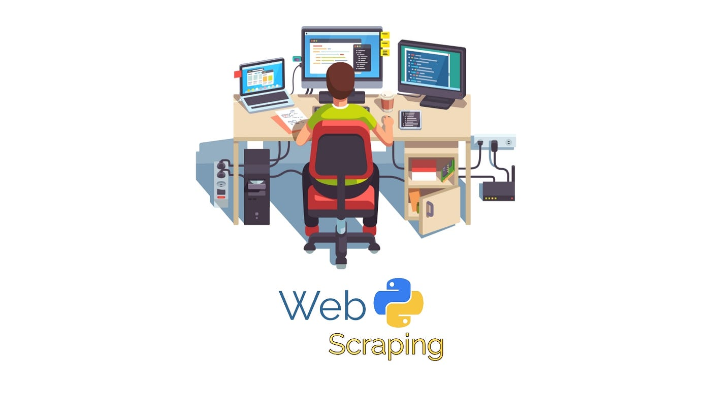
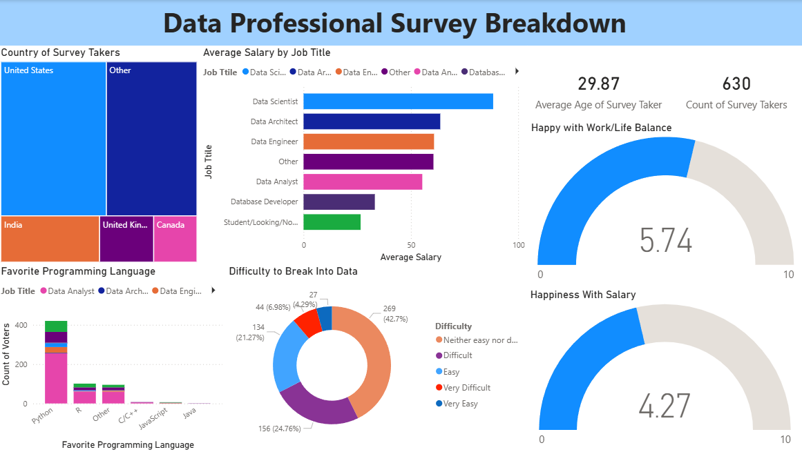
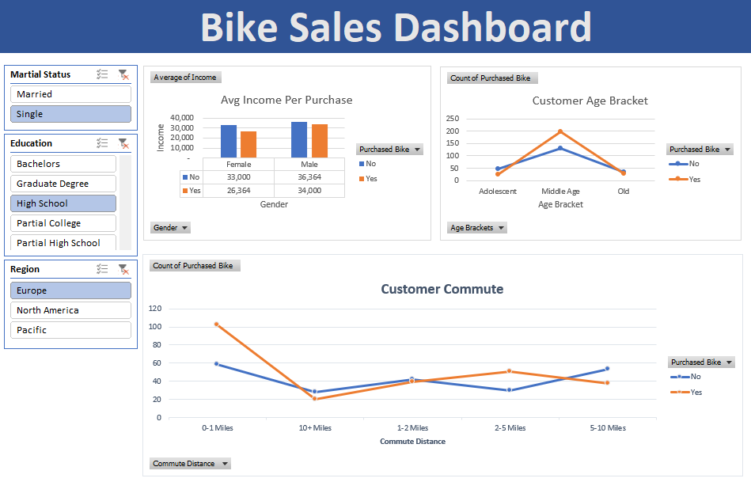

Data Cleaning in SQL
Used SQL to clean and transform a global layoffs dataset by removing duplicates, fixing inconsistent values, handling missing data, and preparing it for exploratory data analysis.

Used SQL to clean and transform a global layoffs dataset by removing duplicates, fixing inconsistent values, handling missing data, and preparing it for exploratory data analysis.

Performed exploratory data analysis using SQL to analyze global layoffs data and identify trends across companies, industries, countries, and time. Used aggregation, grouping, and ranking queries to uncover key patterns in workforce reductions.

Scraped real-world data from a Wikipedia webpage using Python and BeautifulSoup, converting raw HTML tables into a structured Pandas DataFrame and CSV dataset.

Performed data cleaning and transformation in Power BI using Power Query and created charts and dashboards to visualize key patterns and insights from the dataset.

Bike Sales Dashboard (Excel) – Cleaned and transformed a raw bike sales dataset in Excel, preparing it for analysis. Built an interactive dashboard using Pivot Tables, charts, and slicers to visualize customer demographics and bike purchasing trends.